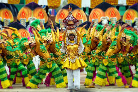
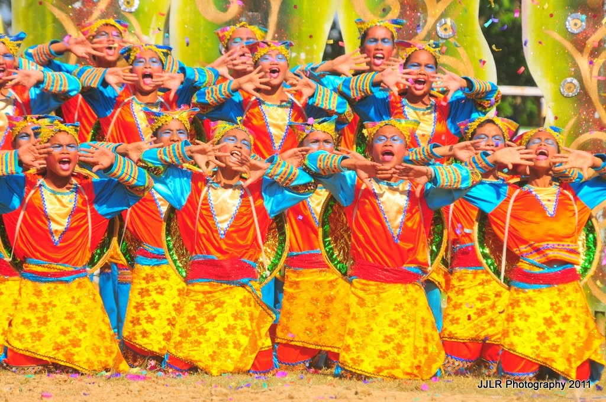
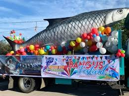

Culture & Festivals
Experience the vibrant traditions of the Sibugaynon people

Sibug-Sibug Festival
Location: Ipil (Provincial Capitol)
Month Celebrated: February
The grandest celebration in the province, marking its founding anniversary. It highlights the thriving rubber industry through street dancing with rubber-inspired costumes, ritual dances, and the famous "Talaba" (Oyster) festival where thousands of fresh oysters are served.

Kasadyaan Festival
Location: Titay
Month Celebrated: April
A colorful cultural event that celebrates abundance and community spirit. The festival features vibrant street parades, cultural performances by various ethnic groups, and local agricultural showcases that honor the municipality's rich harvest and historical roots.
Pasalamat Festival
Location: Naga
Month Celebrated: May
A heartfelt celebration of gratitude for the bountiful harvest and divine providence. It features traditional rituals, thanksgiving masses, and cultural presentations that emphasize the agricultural heritage and unity of the people of Naga.

Kasikas Festival
Location: Diplahan
Month Celebrated: October
A high-energy festival derived from the local term meaning "noise" or "commotion," symbolizing the bustling life of the town. The event showcases lively drum and lyre competitions, street dancing, and displays of local crafts and industrious spirit.

Bangus Festival
Location: Alicia
Month Celebrated: September
Dedicated to the municipality’s thriving aquaculture industry, this festival highlights the "Bangus" (Milkfish). It features a grand parade, culinary contests centered on milkfish recipes, and showcases of sustainable fishing practices that support the local economy.